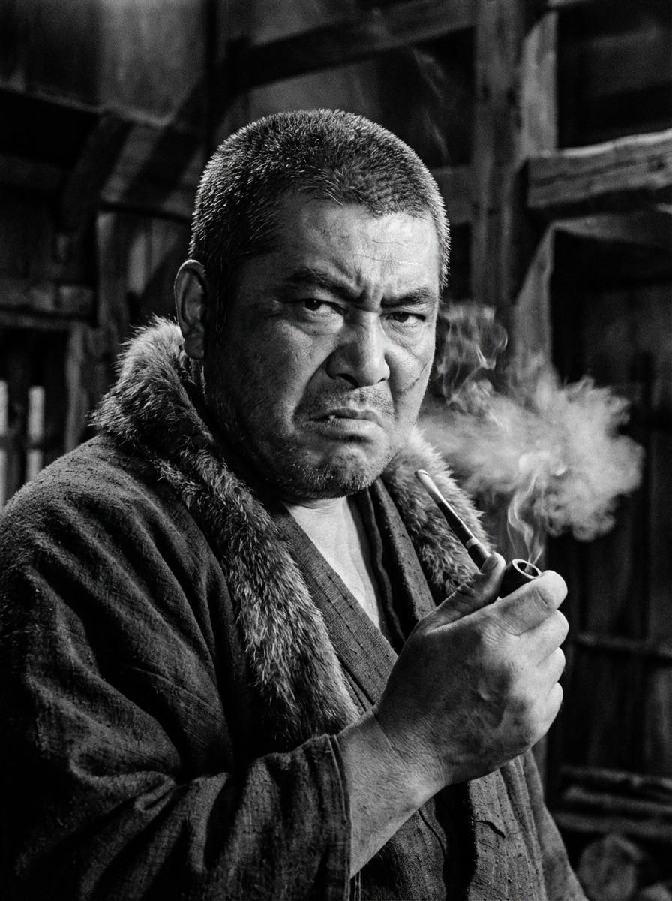

Тадаёси Инаба
Номер два в банде
- Источник: нет
- Пол: м
- Состояние: Жив
- Сословие: Ронин, ветеран-калека
- Локация: Якудза
- Роль в похоронах: Носить гроб
- Ведущий путь: Обсуждается
Что здесь интересно играть
Попытка свергнуть власть и вернуть славу рода
Во что играет
В дела якудза, в карьеру и дележ власти
Из первоисточника
ЁДЗИМБО (1961). Уситора — второй главарь. Был лейтенантом Сэйбэя, откололся, когда тот назначил наследником сына. Тупой, амбициозный, полагается на силу. Его имя содержит иероглиф "бык". Два брата: Инокити (средний) и Уносукэ (младший, с пистолетом). Убит Сандзюро в финальном бою.
Это публичная карточка. Полная версия доступна мастерам.